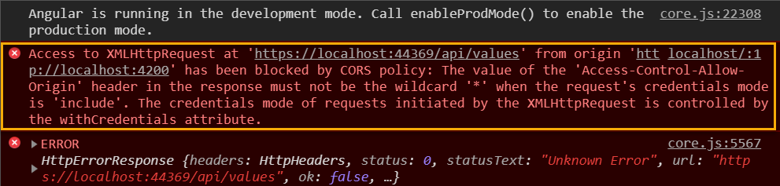

Angular 使用 Windows Authentication，聽起來沒什麼，但是加上 CORS 就是不同的故事了
※ 這篇文章的後端是使用 ASP.NET Core MVC ，但要處理的問題是一樣的，觀念通用
Angular 的 HttpClient 在發送請求時，如果在同一個網址下 (同一個網站)，自然會付上 cookie，但遇到不同站點下時又想要帶 cookie 時，該怎麼處理，這時候就必須將 withCredentials 開啟，這是 XMLHttpRequest 內建屬性，用途為判斷是否該使用類似 cookies, authorization headers 或者 TLS 客戶端認證這一類資格證書來建立一個跨站點訪問控制（cross-site Access-Control）請求。這裡是基本用法，當然如果要全域套用時，就會寫成 Http interceptor
1 | this.http.get('https://localhost:44369/api/values', { |
Angular 端這樣子就可以算是設定完成了
問題是後端要怎麼設定，會遇到幾個問題
- CORS
- Web 授權設定
簡單情境
當 Angular 的 Http 請求只有單純的設定 withCredentials: true 時，後端的設定就很單純，(這裡就假設已經會新增一個基本的 ASP.NET Core MVC 網站)
-
開啟
windowsAuthentication的方法有兩種-
直接修改
Properties/launchSettings.json1
2
3
4
5
6
7
8
9
10
11{
"iisSettings": {
"windowsAuthentication": true, // 設定為 true
"anonymousAuthentication": false,
"iisExpress": {
"applicationUrl": "http://localhost:11235",
"sslPort": 44369
}
},
....
} -
透過 UI 的方式設定
-
在 API 的 Controller 的地方，加上
[Authorize]
-
-
啟動
CORS-
在
Startup.cs檔案新增以下程式碼1
2
3
4
5
6
7
8
9
10
11
12
13
14
15
16
17
18public void ConfigureServices(IServiceCollection services)
{
services.AddCors(o => o.AddPolicy("CORSPolicy", builder =>
{
builder.AllowAnyOrigin()
.AllowAnyMethod()
.AllowAnyHeader()
.AllowCredentials()
.WithOrigins("http://localhost:4200");
}));
}
public void Configure(IApplicationBuilder app, IHostingEnvironment env)
{
...
app.UseCors("CORSPolicy");
...
} -
.WithOrigins("http://localhost:4200")這一行很重要，當 CORS +withCredentials: true時，沒有這一行就會噴出錯誤訊息
-
在 API 的 Controller 的地方，加上
[EnableCors("CORSPolicy")] -
相關關於 ASP.NET Core MVC 如何加上 CORS 的文章，網路很多，搜尋一下應該很容易就找到了
-
-
當上述的兩的步驟完成後，應可以完成最基本的 Windows 驗證功能
-
至於之後驗證要做到多細，就與處理登入驗證的做法是一樣的了
稍微複雜情境
在實做的過程中發現了一個問題，當我的 Http 請求寫成這樣時，後端設定就變複雜許多
1 | this.http |
瀏覽器在請求時，因為會先發 Options 的 preflight 請求，但這時發的請求是不會有任何 credentials 的，當然後端會直接擋掉

這時候後端的設定要調整一下，要允許匿名登入，設定方式跟上面開啟 windowsAuthentication 類似，只要將 anonymousAuthentication 設定為真，或是將 啟動匿名驗證 打勾
當這樣子設定完後，重新啟動後端服務，當打開 https://localhost:44369/api/values 網址時會出現以下的錯誤畫面

只好再來調整一下 Startup.cs 的程式了
1 | public void ConfigureServices(IServiceCollection services) |
當修改完成後，重新整理一次網頁，之前的錯誤訊息就會消失了，打開 Networking 的地方，就會看到兩次對後端的請求都是正常的